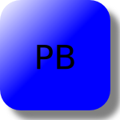
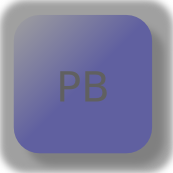

MBLogic
for an open world in automation
MBLogic
for an open world in automation
Push Button and Selector Switch Masks
Push button and selector switch masks are used to enable or disable push buttons and selector switches. The masks are simply a semi-transparent rectangle which covers the button (or selector switch assembly). To enable the push button, the mask is "hidden" (using a Javascript call). To disable the push button, the mask is "shown", where it covers the button and prevents it from being activated.
Because the mask is not completely opaque, the push button is still visible beneath it. The overall effect is the same as "greying out" a button.
Mask is hidden (enabling the button). 
Mask is shown (disabling the button). 
Push Button Masks
Push button masks cover the push button.
| Type | Name | Description | HMIBuilder Name | |
|---|---|---|---|---|
| Push button mask. | pbmask_oblong | Button mask for oblong push buttons. | Push Button Mask | |
| Push button mask. | pbmask_rectangular | Button mask for rectangular push buttons. | Push Button Mask | |
| Push button mask. | pbmask_square | Button mask for square push buttons. | Push Button Mask | |
| Push button mask. | pbmask_tridown | Button mask for triangular (down) push buttons. | Push Button Mask | |
| Push button mask. | pbmask_triup | Button mask for triangular (up) push buttons. | Push Button Mask |
Selector Switch Masks
Selector switch masks cover the operator and the selector switch labels (push buttons).
| Type | Name | Description | HMIBuilder Name | |
|---|---|---|---|---|
| Selector switch mask. | ssmask | Button mask for selector switches. | Push Button Mask |
HMIBuilder Parameters
| Parameter | Type | Values |
|---|---|---|
| Output Tag | List box | Address tags. |